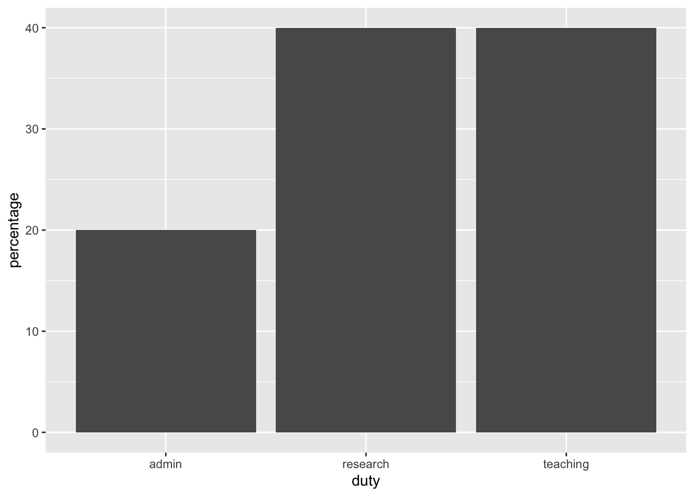
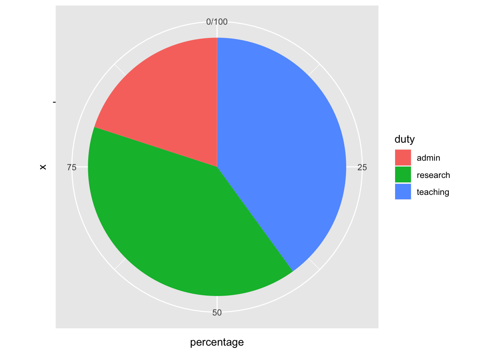

Getting the most out of your experimental data with design
The content of this blog post is originally published in the Biometric Bulletin (2022) Volume 39 Issue 4.
Author
Emi Tanaka
Published
December 12, 2022
Introduction
Experimental data are hallmarks of proving or disproving theories or hypotheses. Not all experimental data are of equal value however; the design of experiment and the execution to collect data greatly shape its downstream value. The seminal book by Fisher (1935) outline the importance of randomisation, replication and (statistical) control in experimental designs motivated primary by agricultural field trials. Fisher (1935) also introduce special cases of row-column designs, such as Latin Square and Graeco-Latin Square designs, factorial designs and the analysis of experimental data using analysis of variance (ANOVA), \(t\)-test, \(\chi^2\)-test and other tests of significance. Montgomery (2001), Box, Stuart Hunter, and Hunter (2005), and Hinkelmann and Kempthorne (2005) are classical textbooks in experimental designs taught in many courses in experimental design. Many of these textbooks, and the teaching of experimental designs, I would argue is focussed on statistical aspects, but in practice, the primary problem in carrying out an experiment is actually centered on human aspects. Consider the following simplified scenario:
the domain expert wants an experiment to validate their hypothesis and needs a statistician to design the experiment;
the statistician elicits the experimental aim and structure from the domain expert and then design the experiment accounting appropriately for statistical issues and practical constraints;
the technician carries out the experimental protocol as directed by the experimental design generated by the statistician and enter the data; and then
the analyst (who may or may not be the same person as the statistician) interprets the experimental aim and design to appropriately analyse the data.
How many people were involved in this experiment? Notice that we are reliant on communication between people, who likely have different discipline backgrounds, to transfer the correct information in order to successfully carry out the experiment. We know human communication is fraught with challenges; misunderstandings are common, not the exception. The unwritten assumption in experimental designs is that all parties involved in the experiment completely understood each other – the statistician understood all the intricacies that the domain expert knows that may affect the experimental outcome, and the technician will carry out the experiment exactly as the design of experiment with no possible error. This assumption is in contrary to what we know about human communication; human communication is a noisy process. What then can we do to mitigate errors in the process?
The grammar of experimental designs
The so-called “The Grammar of Experimental Designs” is the title of my work-in-progress book found at emitanaka.org/edibble-book. More details can be found in the book, but briefly, the grammar of experimental designs is an object oriented programming system designed to capture elements of the origin of an experimental data encapsulated in a cognitive framework. It is an attempt to standardise the computational description of experimental components by fundamental terms so we are not lost in domain-specific jargon.
The motivation of the grammar of experimental designs is best explained by an analogy to the “grammar of graphics” (Wilkinson 2005) with its most popular implementation as ggplot2 (Wickham 2016) in the R language (R Core Team 2021). When we specify a plot, we can specify using a complete recipe. For example, the functions barplot() and pie() create a barplot and a pie chart, respectively, in the base R language – these functions are for a single purpose, nothing more.
When we specify plots using ggplot2, the system requires users to specify components of the plot, not the full plot. This not only gives greater control over the construction of the plot but it encourages the user to think about the relationship between data to plot elements. For example, below we create the pie chart and barplot using ggplot2. The first specification in ggplot2 is to initiate the object by ggplot() where the user can specify the data and the mapping of variable to plot aesthetic, then the user can append a layer like geom_col() to create a barplot. To construct a pie chart in ggplot2, the user must transform the default Cartesian coordinate system to a polar coordinate along one of the axis.
library(ggplot2)# bar plotggplot(data, aes(x = duty, y = percentage)) +geom_col() # pie chartggplot(data, aes(x ="", y = percentage, fill = duty)) +geom_col() +coord_polar("y")


The ggplot2 system has a steep learning curve, however, the mastery of the system allows users to easily create a variety of plots. In a similar vein, the grammar of experimental designs is a system to construct experimental designs by experimental components – the users don’t need to specify the complete design but build up the experimental design by its basic components, like experimental units and treatments, giving them the flexibility in their thinking and specifciation of the experimental structure. The easiest way to grasp the grammar of experimental design is to see examples of its implementation as shown next.
Constructing experimental designs with the edibble R package
The edibble package is a system in the R language to facilitate the design of comparative experiments based on the grammar of experimental designs. The package is available on Comprehensive R Arhive Network (CRAN) with the developmental version available at github.com/emitanaka/edibble and can be installed as below. ::: {.cell}
# installing from CRANinstall.packages("edibble") # OR for the developmental versioninstall.packages("remotes") remotes::install_github("emitanaka/edibble")
:::
Package name
The name of the package, edibble, stands for the experimental design table or tibble for those that are familiar with tidyverse (Wickham et al. 2019). I often see people misspell it as eddible or edible (latter probably due to autocorrect), so I want to emphasise that is is edibble, i.e. one d and two b.
The package name itself relates to the aim of what it tries to produce, i.e. a table where columns specifies the unit and treatment factors in the experimental design and rows specify the characteristics of the observational unit, including the allocated treatment.
Example usage
Let’s suppose that we want to create a randomised complete block design (RCBD) with 6 blocks with 3 plots in each block to test 3 wheat varieties, labelled A, B and C. As not all of you may know what a RCBD is, to describe it more explicitly, the treatments (in this case the 3 wheat varieties) are randomly allocated to one of the plot (experimental unit) within a block; only one treatment level can be assigned to each plot; and each treatment level must appear exactly once in each block. The specification of this design in the edibble system is shown below and can be interpreted as follows:
Line 1: load the library,
Line 2: set the seed to ensure replication of the randomised design,
Line 3: initialise the design object,
Line 4-5: set the unit factors, namely 6 blocks and 3 plots nested in each block,
Line 6: set the treatment factor, variety, with 3 levels (A, B, and C),
Line 7: specify the high-level treatment to unit allocation,
Line 8: assign the treatment randomly, and
Line 9: the design specification is complete, now convert the result to a table.
# Randomised Complete Block Design
# An edibble: 18 x 3
block plot variety
<unit(6)> <unit(18)> <trt(3)>
1 block1 plot1 A
2 block1 plot2 B
3 block1 plot3 C
4 block2 plot4 A
5 block2 plot5 B
6 block2 plot6 C
7 block3 plot7 A
8 block3 plot8 C
9 block3 plot9 B
10 block4 plot10 C
11 block4 plot11 B
12 block4 plot12 A
13 block5 plot13 B
14 block5 plot14 C
15 block5 plot15 A
16 block6 plot16 C
17 block6 plot17 B
18 block6 plot18 A
Above table output shows the resulting allocation of the treatment to units, e.g. from the first row we see that first plot in the first block is assigned variety A.
Now consider the design specified below. How is this different to above?
# Do exam type matter?
# An edibble: 18 x 3
school student exam
<unit(6)> <unit(18)> <trt(3)>
1 school1 student1 Oral
2 school1 student2 Oral
3 school1 student3 Oral
4 school2 student4 Computer
5 school2 student5 Computer
6 school2 student6 Computer
7 school3 student7 Oral
8 school3 student8 Oral
9 school3 student9 Oral
10 school4 student10 Written
11 school4 student11 Written
12 school4 student12 Written
13 school5 student13 Computer
14 school5 student14 Computer
15 school5 student15 Computer
16 school6 student16 Written
17 school6 student17 Written
18 school6 student18 Written
First, you may have noticed that the experimental factors are named differently. The names that you enter in set_units() and set_trts() are not fixed by the system – the user may enter the name that is appropriate for their experimental context. These are just simply labels but it captures the valuable experimental context. In fact, the unit structure is exactly the same as the previous experiment! But it’s easy to see that the first experiment is a wheat variety trial but the second experiment is comparing the exam type across schools.
Second, aside from labels, you may have noticed everything is the same as the previous experiment except line 5. The treatment (exam type) are randomly allocated to schools, not individual students within a school. You can see this in the resulting table output – each school gets only one type of exam. The resulting design is in fact called a completely randomised design. Here, the experimental units are the schools and the intended observational units are the students.
You may think the edibble system is only for balanced designs (where there is equal number of units within a block), but you can easily specify unbalanced designs as shown in line 3-5 below where there are two blocks (labelled I and II) where block I has 3 plots and block II has 6 plots.
# Unbalanced design
# An edibble: 9 x 3
block plot variety
<unit(2)> <unit(9)> <trt(3)>
1 I plot1 B
2 I plot2 A
3 I plot3 C
4 II plot4 C
5 II plot5 A
6 II plot6 B
7 II plot7 C
8 II plot8 B
9 II plot9 A
There are more features in the edibble system. These features include setting responses using set_rcrds(), simulating responses with simulate_rcrds() (experimental only), and setting expectation of responses expect_rcrds(), e.g. when values should be positive numbers only. The latter allows files to be encoded with data validation rules, e.g. export_design() outputs the edibble table as an Excel file where values outside of expectation cannot be entered by exploiting Excel’s data validation system.
The edibble system has been designed so that developers can extend the system. If the assign_trts() is not suitable, then you can replace this with an alternative one. Likewise, if an Excel output is not desired then you can replace the exporting system with another system. The system exposes its components as modular functions to allow extensibility. The caveat of the edibble system is that there is a steep learning curve for both the user and the developer – but mastery of the grammar should help you flexibly specify a variety of experimental designs and deepen your thinking about the experimental design.
Recipe experimental designs
“Good design considers units and treatments first, and then allocates treatments to units. It does not choose from a menu of named designs.” – Bailey (2008)
I highly discourage the use of named experimental designs, but I acknowledge that the literature is littered with them. The compromise I have made is to include a set of functions that are prefixed with menu_. For example, below menu_rcbd() shows the code to generate a RCBD with 3 treatments and 6 blocks. If you must take this approach, I suggest that you copy the output code and replace the generic factor names with what is appropriate in the context of your own experiment.
If you want to actually see a table output then you can takeout() any named design (on the menu). Say below menu_lsd() shows the code for generating a Latin Square design; the takeout() of this design on the menu shows the table output of the Latin Square design with 4 treatments.
The design of an experiment is, without a doubt, of critical importance in the advancement of our knowledge. In fact, a good experimental design and well executed collection of data can eliminate or reduce the necessity of certain statistical analysis. The use of experimental designs in practice are arguably propagated by statistical software and interested readers can see Tanaka and Amaliah (2022) for a review of popular R packages in experimental design. The edibble R package is an attempt to specify designs by a paradigm that is flexible, yet human-centered. By building designs based on its components, users are required to think about the ingredients that make up the composition of the experimental structure – this system design I would hope translates to higher order thinking about experimental designs.
This article did not touch on much about optimal, adaptive, model-based nor domain-specific designs. The scope of work in the design of experiments is large and substantial work remain to bridge the gap between the principles and practice of experimental designs. Too often, teaching of experimental design is overshadowed by the analysis of experimental data and to get the most out of experimental data, we should remember that experimental context is invaluable in the design and no analysis can extract information from rubbish data.
References
Bailey, Rosemary. 2008. Design of Comparative Experiments. Cambridge University Press.
Box, George E P, J Stuart Hunter, and William G Hunter. 2005. Statistics for Experimenters: An Introduction to Design, Data Analysis, and Model Building. 2nd ed. John Wiley & Sons, Inc.
Fisher, Ronald Aylmer. 1935. The Design of Experiments. Oliver; Boyd.
Hinkelmann, Klaus, and Oscar Kempthorne. 2005. Design and Analysis of Experiments. 2nd ed. Vol. 1. Wiley Blackwell.
Montgomery, Doulgas C. 2001. Design and Analysis of Experiments. 5th ed. John Wiley & Sons, Inc.
R Core Team. 2021. R: A Language and Environment for Statistical Computing. Vienna, Austria: R Foundation for Statistical Computing. https://www.R-project.org/.
Wickham, Hadley. 2016. Ggplot2: Elegant Graphics for Data Analysis. Springer-Verlag New York.
Wickham, Hadley, Mara Averick, Jennifer Bryan, Winston Chang, Lucy D’agostino McGowan, Romain Francois, Garrett Grolemund, et al. 2019. “Welcome to the Tidyverse.”Journal of Open Source Software 4 (43): 1686.
Wilkinson, Leland. 2005. The Grammar of Graphics. 2nd ed. Springer.